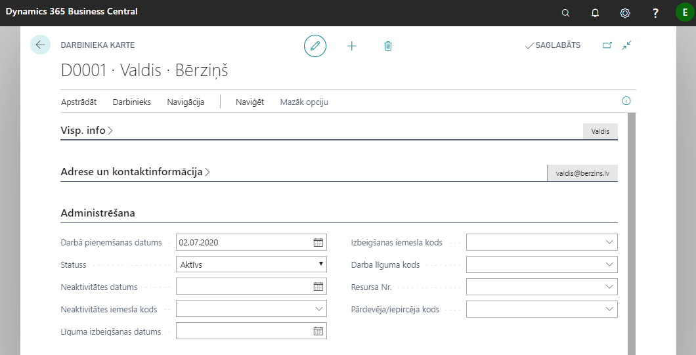
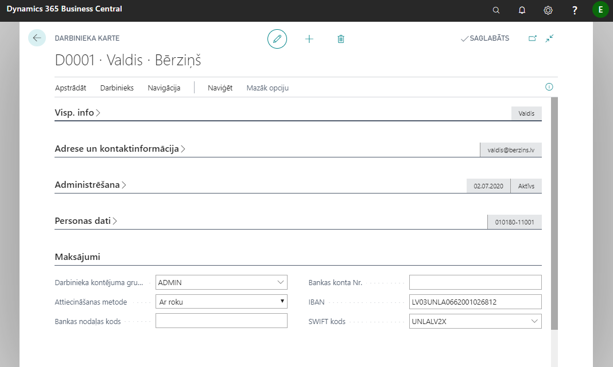
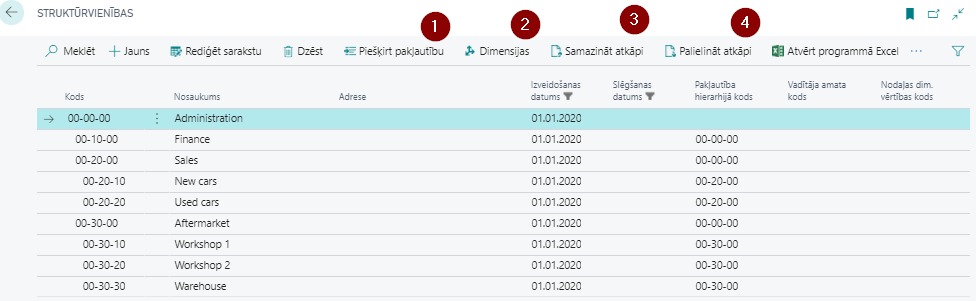
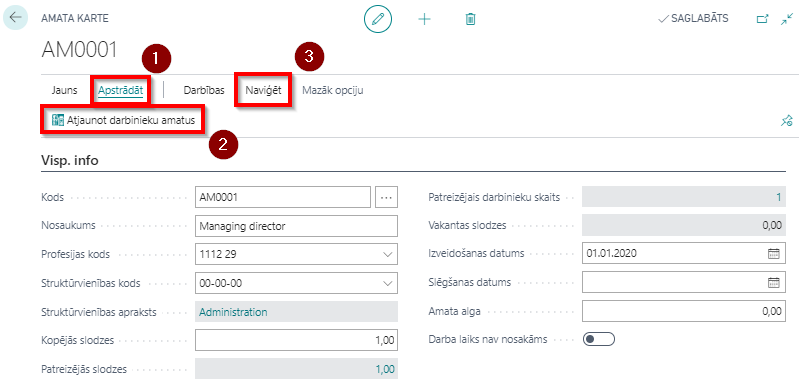
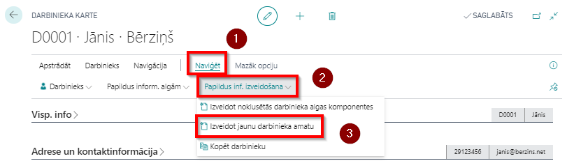
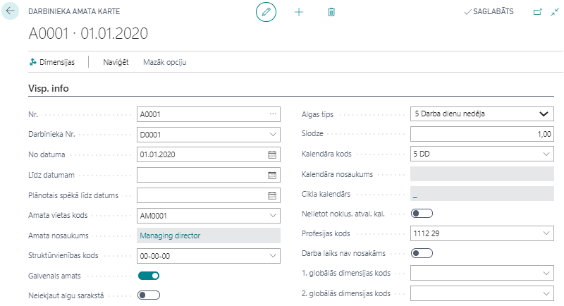
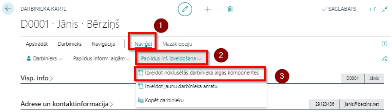

Darbinieka kartiņa
Visi darbinieki ir apkopoti sarakstā Darbinieki. Lai pieņemti darbā jaunu darbinieku ir jāizveido jauna darbinieka kartiņa, jo katram darbiniekam ir sava atsevišķa kartiņa, kurā ir apkopota visa informācija, kas nepieciešama uzskaitei, aprēķiniem un atskaitēm.
Lietotāju ērtībām ir pieejama arī darbinieka kartiņas kopēšanas funkcija (Darbinieka kartiņas rīkjoslā Naviģēt-Darbinieks-Kopēt darbinieku), ko ir ērti izmantot, ja darbinieks pēc atbrīvošanas ir atkārtoti uzsācis darbu uzņēmumā. Tomēr, lai izvairītos no iespējamām kļūdām (piemēram, vidējās izpeļņas aprēķinā, paziņojumā par fiziskajām personām izmaksātajām summām), ir ieteicams veidot jaunu darbinieka kartiņu.
Tip
Obligāti aizpildāmie lauki apraksta tabulu kolonnā Lauka tips ir atzīmēti ar izsaukuma zīmi "!".
Cilne: Visp. info

| Lauka nosaukums | Lauka tips | Apraksts |
|---|---|---|
| Nr | ! | Aizpildās automātiski. |
| Vārds | ! | Darbinieka vārds. |
| Otrais vārds/Iniciāļi | Darbinieka otrs vārds vai iniciāļi. | |
| Uzvārds | ! | Darbinieka uzvārds. |
| Meklēšanas nosacījumi | Aizpildās automātiski. | |
| Dzimums | ! | Darbinieka dzimums. |
| Uzņēmuma tālruņa Nr. | Brīvi aizpildāms lauks informācijai. | |
| Uzņēmuma e-pasts | Brīvi aizpildāms lauks informācijai. | |
| Pēdējās modifikācijas datums | Informatīvs lauks, paredzēts darbiniekam izmaksāto summu kontrolei. | |
| Bloķēts privātuma dēļ | Tiek aizpildīts gadījumā, ja darbinieks uzrakstījis iesniegumu bloķēt informāciju par viņu. Tādā gadījumā šis darbinieks netiek atspoguļots atbilstošos sarakstos. | |
| Izmaksu summa | Informatīvs lauks, paredzēts darbiniekam izmaksāto summu kontrolei. | |
| Izmaksu summa pirms storno | Informatīvs lauks. | |
| Maksājumu summa | Informatīvs lauks, paredzēts darbiniekam izmaksāto summu kontrolei. | |
| Atlikusī maksājumu summa | Informatīvs lauks, paredzēts darbiniekam izmaksāto summu kontrolei. | |
| Nav atļauts apsveikt | Tiek aizpildīts gadījumā, ja darbinieks pēc GDPR negribētu afišēt savu dzimšanas dienu. |
Cilne: Adrese un kontaktinformācija
Šajā cilnē norāda adreses, telefona numurus, e-pasta adreses un alternatīvās adreses. Alternatīvo adrešu skaits var būt neierobežots. Lauki ir aizpildāmi pēc vajadzības. Ja lietotājs vēlas, lai darbiniekam tiek sūtītas algu lapiņas uz e-pasta adresi, tad lauks E-pasts ir jāaizpilda obligāti.

Alternatīvās adreses
Katram darbiniekam var ievadīt neierobežotu alternatīvo adrešu skaitu. Šim nolūkam sarakstā Alternatīvās adreses ir jāievada kods un tam atbilstošā kontaktinformācija. Tālāk kādu no Alternatīvās adreses kodiem var ievadīt šim nolūkam paredzētajā laukā darbinieka kartiņas cilnē Adrese un kontakts.
Cilne: Administrēšana

| Lauka nosaukums | Lauka tips | Apraksts |
|---|---|---|
| Darbā pieņāmšanas datums | ! | Aizpildot šo lauku, sistēma piedāvās ievadīt darbinieka ziņu kodu EDS iesniedzamam paziņojumam Ziņas par darba ņēmējiem. Atkārtoti šo logu var atvērt klikšķinot rīkjoslā uz pogām Naviģēt - Darbinieks - Algas - Ziņu kodi |
| Statuss | ! | Aktīvs, Neaktīvs, Izbeigts, Pretendents. Pēc noklusējuma aizpildās Aktīvs. |
| Neaktivitātes datums | Norāda datumu, kad darbinieks kļuvis neaktīvs, piemēram, bērna kopšanas atvaļinājums. | |
| Neaktivitātes iemesla kods | Darbinieka neaktivitātes iemesla kods. | |
| Līguma izbeigšanas datums | ! | Obligāts lauks atbrīvojot darbinieku. |
| Izbeigšanas iemesla kods | Norāda darba izbeigšanas kodu pārtraucot darba attiecības. | |
| Darba līguma kods | Norāda ar darbinieku saistīto darba līguma kodu. | |
| Resursa Nr. | Norāda darbinieka resura numuru. | |
| Pārdevēja/iepircēja kods | Norāda kodu, kas piešķirts darbiniekam, kas ir pārdevējs vai iepircējs. |
Cilne: Personas dati

| Lauka nosaukums | Lauka tips | Apraksts |
|---|---|---|
| Dzimšanas datums | ! | Norāda darbinieka dzimšanas datumu. |
| Personas kods | ! | Nerezidenta gadījumā LR piešķirtais NMR kods. Gadījumā, ja personas kods sākas ar 32, dzimšanas datums netiks aizpildīts. |
| Iepriekšējais personas kods | ! | Gadījumā, ja laukā Personas kods ir ievadīts jauns personas kods, iepriekšējais personas kods tiks automātiski pārkopēts laukā Iepriekšējais personas kods. Jāpievērš uzmanība, lai iepriekšējais personas kods būtu pārkopēts laukā Iepriekšējais personas kods, laukam Iepriekšējais personas kods jābūt tukšam. |
| Apvienības kods | Ja darbinieks ir iestājies kādā apvienībā. | |
| Apvienības dalībnieka Nr | Obligāts lauks atbrīvojot darbinieku. | |
| Rezidence | ! | Pēc noklusējuma aizpildās Rezidents. |
| Nerezidenta ID kods | Norāda nerezidentam piešķirto personas identifikācijas kodu. | |
| Darba atļaujas termiņš | Norāda datumu, līdz kuram derīga ir darba atļauja. |
Cilne: Maksājumi

| Lauka nosaukums | Lauka tips | Apraksts |
|---|---|---|
| Darbinieka kontējuma grupa | ! | Izvēlas darbinieka kontējuma grupu no saraksta. |
| Attiecināšanas metode | Norādīt veidu, kā piemērot maksājumus šim darbiniekam. | |
| Bankas nodaļas kods | Norāda darbinieka algas konta bankas filiāles nosaukumu. | |
| Bankas konta Nr. | Norāda darbinieka bankas kontu, uz kuru jāveic algas maksājums. | |
| IBAN | ! | Darbinieka bankas konta starptautiskais kods, uz kuru ir jāveic algas maksājums.** |
| SWIFT kods | ! | Bankas SWIFT kods. |
Cilne: Algas

| Lauka nosaukums | Lauka tips | Apraksts |
|---|---|---|
| Soc. statusa kods | ! | Izvēlas no saraksta darbinieka statusa kodu. |
| Uzņēmuma līgums | Norāda, vai darbinieks strādā pamatojoties uz uzņēmuma līguma. | |
| Autoratlīdzības | Norāda, vai darbinieks saņem autoratlīdzību. | |
| Pārbaudes laika periods | Norāda pārbaudes laika ilgumu, piemēram, 3M. | |
| Pārbaudes laika beigas | Vērtība ielasās automātiski, vadoties pēc darbā pieņemšanas datuma un norādītā pārbaudes laika perioda ilguma. | |
| Uzkr.(-)/izņ.(+) atvaļ. dienas | Šis lauks tiek izmantots uzkrātā atvaļinājuma dienu atlikuma ievadei. | |
| Vidējā samaksa par stundu | Ja aprēķins ir veicams ņemot vērā stundas. | |
| Nerezidenta ienākumu veids | Norāda, ja darbinieks ir nerezidents. |
Cilne: Darbinieka amati
Būtiska darbinieka kartiņas daļa!
Šajā cilnē tiek norādīti tādi aprēķinam vajadzīgie parametri kā darba laika kalendārs, amatā pieņemšanas datums, amata nosaukums.
Lai varētu sākt vadīt informāciju šajā cilnē, sākotnēji sistēmā ir jāizveido:
- uzņēmuma struktūrvienības;
- jāizveido darbinieku amatu saraksts;
- jāiestata darba laika kalendāri;
- jāiestata svētku kalendārs.
Struktūrvienības
Sistēmā iespējams uzturēt strukturētu informāciju par uzņēmuma struktūrvienībām. Informācija būs gan aktuālā, gan arī vēsturiskā, jo struktūrvienības sistēmā netiek dzēstas, bet gan slēgtas.
Lai nodrošinātu struktūrvienību hierarhiju, tiek kombinētas kārtošanas un atkāpju metodes. Tātad viena struktūrvienība ir pakļauta otrai struktūrvienībai, ja tā atrodas pēc galvenās struktūrvienības un ir ar vienu līmeni lielāku atkāpi. Atkarībā no struktūrvienību atkāpju dziļuma un struktūrvienību skaita, sastāda struktūrvienības kodu. Struktūrvienības atkāpes tiek veidotas ar funkciju
,
un
palīdzību Struktūrvienības rīkjoslā.
Struktūrvienībām var piesaistīt dimensijas, klikšķinot uz pogas Dimensijas (
)

Lauka nosaukums Apraksts Kods Struktūrvienības kods, ko definē lietotājs. Nosaukums Struktūrvienības nosaukums. Adrese Adrese, kur atdodas struktūrvienība. Izveidošanas datums Datums, kad struktūrvienība ir izveidota. Slēgšanas datums Datums, kad struktūrvienība ir slēgta. Pakļautība hierarhijā kods Struktūrvienības kods, kurai struktūrvienība ir pakļauta. Vadītāja amata kods Atbilstošais vadītājā amata kods no saraksta Amati. Dimensijas vērtības kods Struktūrvienības dimensijas vērtības kods no standarta algu dimensiju klasifikatora.
Amati
Visi uzņēmumā lietotie amati tiek apkopoti sarakstā Amati. Katram amatam ir jāizveido atsevišķa Amata kartiņa.
Ja sistēmā tiek labota informācija par profesijas kodu un struktūrvienības kodu, tad, lai šīs izmaiņas parādītos arī darbinieka kartiņā, amata kartē ir jāaktivizē funkcija Atjaunot darbinieku amatus, klikšķinot uz Apstrādāt (
Amata kartiņai var piesaistīt dimensijas, klikšķinot uz Naviģēt (

Lauka nosaukums Apraksts Kods Jaunās amata vietas kods. Nosaukums Amata nosaukums. Profesijas kods Kods no Darbinieku statistikas grupas. Struktūrvienības kods Kods no Struktūrvienības saraksta. Struktūrvienības apraksts Apraksts no Struktūrvienības saraksta. Kopējās slodzes Slodzes, kas ir paredzētas šim amatam kopā. Patreizējās slodzes Cik amata slodzes uzņēmumā jau ir aizņemtas. Patreizējais darbinieku skaits Darbinieku skaits, kas ir nodarbināti konkrētā amatā. Vakantās slodzes Cik slodzes vēl ir vakantas šim amatam. Izveidošanas datums Amata izveidošanas datums. Slēgšanas datums Amata slēgšanas datums. Amata alga Informatīvs lauks. Darba laiks nav nosakāms Atzīmē, ja amatam darba laiks nav nosakāms un tiek pakārtots uzņēmuma vajadzībām.
Darba laika kalendāri
Kalendārs ir visu aprēķinu pamatā. Katrai darbinieka amata kartei ir jāpievieno darba laika kalendāra kods. Kalendārs tiek izmantots darba dienu un stundu aprēķinos, kā arī, lai aprēķinātu plānotās darba dienas un stundas mēnesī, ko izmanto prombūtņu aprēķinos.
Katram kalendāram ir savu kartiņa. Darba laiku kalendāru kartiņas apkopotas sarakstā Darba laika kalendāri. Lietotājs var izveidot papildus kalendārus atkarībā no uzņēmuma vajadzībām. Sistēmas standartpakotnē ir divu veidu darba laika kalendāri: 5 darba dienu un 6 darba dienu. Darba dienām, kurām atšķiras darba stundas (piemēram, pirmssvētku dienas) nepieciešams kalendāros papildināt manuāli ik gadu.
Veidojot jaunu darba laika kalendāra kartiņu, iestatījumiem pieejami sekojoši lauki:
Cilne: Visp. info
Lauka nosaukums Apraksts Kods Brīvi definēts kods. Nosaukums Brīvi izvēlēts nosaukums. Svētku kalendāra kods Svētku kalendārs, kas ir piesaistīts konkrētam darba laika kalendāram. Svētku kalendārs Atzīme, ka šis kalendārs ir svētku kalendārs (tikai svētku kalendāriem). Darbs arī brīvdienās Atzīmē, ka darbinieki strādā arī brīvdienās. Cikla kalendārs Atzīme, ja darba laika kalendārs ir veidots kā cikla kalendārs. Cikla sākuma datums Nodefinē cikla kalendāra pirmo dienu. Cilne: Kalendāra ieraksti
Kalendāra ierakstos tiek atspoguļota informācija par katru dienu, ņemot vērā piesaistīto svētku dienu kalendāru. Ja pamata kalendāram virsrakstā ir norādīts Svētku kalendārs, tad visas svētku dienas attiecas arī uz šo kalendāru. Īpašas izmaiņas var izdarīt katrā kalendārā atsevišķi - pārcelt konkrētas darba dienas, saīsināt pirmssvētku dienu stundas, norādot konkrētus datumus. Gadījumā, ja vajadzētu kompensēt svētku dienu, kura iekrīt normālajā darba nedēļā, šo informāciju var reģistrēt cilnē Kalendāra izmaiņu apakšforma.
Cilne: Kalendāra izmaiņu apakšforma
Lauka nosaukums Apraksts Periodiskums Gada periods (parasti izmanto svētku kalendāriem), Nedēļas periods vai Cikls. Datums Ja nepieciešams, norāda konkrētu datumu (parasti izmanto svētku kalendāriem). Diena Norāda nedēļas dienas dienu. Cikla kārtas numurs Ja periodiskums ir Cikls, tad norāda cikla kārtas Nr. Nosaukums Brīvi izvēlēts apraksts. Brīvdiena Atzīme, vai konkrētā diena ir brīvdiena. Svētku diena Atzīme, vai konkrētā diena ir svētku diena. Gadījumā, ja svētku diena pārcelta uz citu dienu (piemēram, 18. novembris vai 4. maijs), tad šai informācijai jābūt ievadītai darba laika kalendārā ar tipu Brīvdiena un kompensējamām stundām.
Cilne: Kalendāra gadu apakšforma
Tiek noradīts gads un vidējais stundu skaits mēnesī gadījumam, ja darbiniekam ir summētais darba laiks un pamatalga proporcionāli stundām, tiek ņemts vērā vidējais stundu skaits mēnesī stundas likmes aprēķinam. Šī likme tiek izmantota nakts stundām, virsstundām, svētku stundām, svētku dienu/stundu kompensācijām.


Svētku dienu kalendāri
Sistēmas standarta pakotnē ir izveidots standarta svētku kalendārs ar jau iestatītām svētku dienām, kas atkārtojas katru gadu vienā un tai pašā datumā (piemēram, Ziemassvētki, Jāņi, utt.). Svētku dienas, kuras neatkārtojas vienā un tai pašā datumā (piemēram, Lieldienas, Mātes diena, Vasarsvētki, kā arī, pārceltās svētku dienas), ir jāpapildina manuāli katru gadu.
Cilne: Visp. info
Tiek aizpildīti tikai lauki Kods un Nosaukums, kā arī ielikta pazīme “Svētku kalendārs” . Pārējie šīs cilnes lauki ir neaktīvi, un sistēma tos aizpilda pati.
Cilne: Kalendāra ieraksti
Cilne: Kalendāra izmaiņu apakšforma
Ja svētku dienas atkārtojas ik gadu vienos un tajos pašos datumos, tad periodiskumu izvēlas Gada periods un saliek attiecīgos uzstādījumus. Ja svētku dienas neatkārtojas ik gadu vienos un tajos pašos datumos, tad lauku periodiskums atstāj tukšu.


Lai darbiniekam piešķirtu amatu, klikšķiniet uz pogām Apstrādāt () un Izveidot jaunu darbinieka amatu ().

Atvērsies jauns logs Darbinieka amata karte.

| Lauka nosaukums | Lauka tips | Apraksts |
|---|---|---|
| Nr. | Darbinieka amata numerācija nepieciešama, lai programma varētu pareizi aprēķināt algu gadījumā, ja darbiniekam mainījies amats. Amata maiņas gadījumā jaunajam amatam automātiski tiek piešķirts jauns Darbinieka amata numurs. | |
| Darbinieka Nr. | Izvēlas darbinieku no saraksta. | |
| No datuma | Amats stājas spēkā ar noteiktu datumu, kuru norāda laukā Spēkā no. Pirmajam darbinieka amatam šis lauks pēc noklusējuma tiek aizpildīts ar darbā pieņemšanas datumu. | |
| Līdz datumam | Norāda, ja amatam ir zināms beigu termiņš. | |
| Plānotais spēkā līdz datums | Norāda, ja amatam ir plānots beigu termiņš. | |
| Amata vietas kods | ! | Izvēlas darbinieka amatu no amatu saraksta. |
| Amata nosaukums | ! | Nosaukums ielasās automātiski no izvēlētās amata kartiņas. |
| Struktūrvienības kods | ! | Izvēlas darbinieka struktūrvienību. |
| Galvenais amats | Ja darbiniekam ir vairāki amati, tad starp visiem amatiem ir jānorāda galvenais. | |
| Neiekļaut algu sarakstā | Darbinieka atlaišanas gadījumā šis lauks tiek atzīmēts automātiski, tiklīdz ir izveidots pēdējais algu saraksts. | |
| Algas tips | ! | Norāda darbinieka darba algas aprēķina tipu (piem., summētais darba laiks, maiņu darbs, 5 dienu darba nedēļa). |
| Slodze | Paredzēts statistisko atskaišu veidošanai. | |
| Kalendāra kods | ! | Izvēlas no darba laika kalendāru saraksta. Kalendārs ir visu aprēķinu pamats. |
| Kalendāra nosaukums | Kalendāra kods ielasās automātiski no Kalendāru saraksta. | |
| Cikla kalendārs | Parādās informācija par cikla kalendāru, ja tāds tika izvēlēts Kalendāra kods lauciņā. | |
| Nelietot noklus. atvaļ. kal | Nelietot noklusēto atvaļinājuma kalendāru. | |
| Profesijas kods | tiek izvēlēts atbilstošs kods no profesijas kodu klasifikatora. | |
| Darba laiks nav nosakāms | norāda, ja par darba izpildi nav iespējams noteikt faktiski nostrādātās stundas (šis lauks darbojas kā filtrs 2-darbs uzstādījumos). | |
| 1. globālās dimensijas kods | Ja nepieciešams, norāda 1. globālo dimensiju. | |
| 2. globālās dimensijas kods | Ja nepieciešams, norāda 2. globālo dimensiju. |
Nepieciešamības gadījumā Darbinieku amata kartiņā ir iespējams arī piešķirt dimensijas apskatītajam darbinieka amatam.
Cilne: Algas komponentes
Darba algas komponentēs norāda nodokļu, atvieglojumu un atvilkumu komponentes, kuras jāiekļauj darbinieka darba algas aprēķinā.
Pēc noklusējuma sadaļā Algas komponentes uzlikts filtrs Tikai aktīvas komponentes. Tas nozīmē, ka sistēma atspoguļo aktīvas komponentes aktuālajā sistēmas darba datumā. Lai apskatītu visas komponentes, jānoklikšķina uz pogām Algas komponentes un Rādīt visas/Tikai aktīvas. Nospiežot otro reizi, sistēma uzliks noklusēto filtru.
Izveidojot jaunu darbinieka kartiņu, pirmo reizi algu komponentes ir jāģenerē automātiski. Lai to izdarītu, rīkjoslā jānoklikšķina uz pogas Apstrādāt () un tad Izveidot noklusētās darbinieka algas komponentes ().

Algas komponentes ir vieta, kur ir jānorāda pamatalgas komponente, kā arī citas regulāru papildus ienākumu komponentes (piemaksas, prēmijas, bonusus u.tml., kas ir konstantas summas katru mēnesi ilgstošu laika periodu). Nepieciešamības gadījumā rindas papildina ar informāciju par atvieglojumiem - Apgādājamie, Invaliditāte, Represētais.
Tip
Gadījumā, ja darbinieks iesniedzis nodokļu grāmatiņu darba devējam, jāaizpilda katalogs Saistīta informācija, ko var atrast rīkjoslā klikšķinot uz Naviģēt -Darbinieks-Algas. Ja nebūs reģistrēta nodokļu grāmatiņa, komponentes par atvieglojumiem nevarēs pievienot.
Komponentēs norāda arī informāciju par ilgstošiem Atvilkumiem (izpildraksti, alimenti, par auto lietošanu, u.tml.). Kā atvilkums uzrādāms arī avanss. Atvilkumus darbinieku kartiņā atzīmē tikai tajos gadījumos, kad tie ir konstantas summas, kas atkārtojas katru mēnesi. Vienreizēji ieturami atvilkumi reģistrējami Komponenšu reģistrs.
No darbinieka kartiņas var ērti piekļūt sekojošām atskaitēm:
- Uzkrātās atvaļinājuma dienas - iznirstošā logā parādās uz darba datumu aktuālās uzkrātās atvaļinājuma dienas. Funkcija pieejama klikšķinot darbinieka kartiņas rīkjoslā uz pogām Apstrādāt - Uzkrātās atvaļinājuma dienas.
- Detalizēta informācija - informācija un tiešsaiste uz veiktajiem aprēķiniem, maksājumu un prombūtņu darījumiem, kas saistīti ar apskatīto darbinieku.
- Neierašānās - informācija un tiešsaiste uz prombūtņu reģistra ierakstiem, kas saistīti ar apskatīto darbinieku
Atskaites saistītas ar darbiniekiem
- Neierašanās pa katergorijām
- Dažādu priekšmetu pārskats
- Konfidenciālas informācijas pārskats